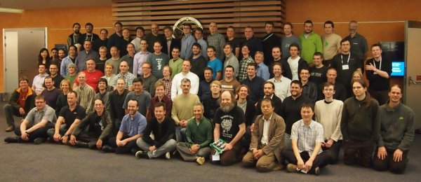
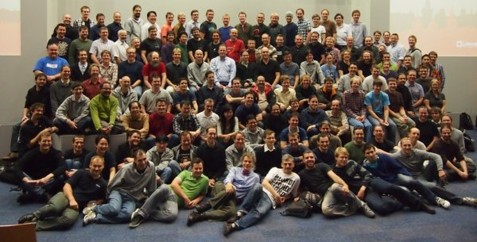

The 2011 Kernel Summit
Day 1
The Kernel Summit proper started on October 24 with the traditional closed session. The topics discussed there were:
- Kernel.org report; including some more
information about the compromise along with what is being done to secure
this critical infrastructure going forward.
- Tracing for large data centers looked
at Google's needs in the tracing area, but then the discussion moved into
whether moving the tools into the kernel tree will help alleviate some of
the problems with ABIs and backward compatibility.
- Structured error logging; a
presentation (only partly delivered) on improving kernel error logging.
- Coming to love cgroups; while love for
control groups may not have been the outcome, some more understanding of
cgroups, controllers, and the problems with the latter did.
- Memory management issues; a session on
the progress the subsystem has made over the last year along with a list of
patches that are in need of review and rework with an eye to eventually
merging them.
- Preemption disable and verifiable APIs
discussed calls to the this_cpu*() family as
well as preempt_disable() calls multiplying throughout the kernel,
which cause problems, and not just for the realtime kernel.
- Scheduler testing; a reworked version
of the LinSched scheduling simulator was discussed and proposed to be added
to the kernel tools/ directory. It may provide the long-sought
ability to more reliably test scheduler changes.
- Patch review; in a wide-ranging
discussion, various
problems in the area of patch review were covered. The discussion
eventually turned to Android's kernel patches and, in particular, suspend
blockers with a, perhaps, surprising conclusion.
- Development process issues; there were fewer problems in this area than there have been in recent years. Linus is happy with how things are going, overall, though the growth of complexity in the kernel is somewhat worrisome.

Day 2
The second day of the 2011 Kernel Summit featured a changed format: the session was open to all attendees. Coverage for this day has been split into two parts:
- Morning: reports from a large number
of minisummits, more on kernel.org security and the web of trust, and
regression tracking.
- Afternoon: shared libraries, failure handling, the media controller, the kernel build and configuration subsystem, and the future of the event itself.
Needless to say, coverage would not be complete without a picture of the expanded group arranged into a rather compressed space:
(Your editor would like to thank the Linux Foundation for supporting his travel to Prague for this event).
| Index entries for this article | |
|---|---|
| Kernel | Kernel Summit |
| Conference | Kernel Summit/2011 |
Posted Oct 25, 2011 8:24 UTC (Tue)
by niner (guest, #26151)
[Link] (2 responses)
Thank you so much!
Posted Oct 25, 2011 9:39 UTC (Tue)
by lab (guest, #51153)
[Link]
Posted Oct 27, 2011 21:20 UTC (Thu)
by glyffa (subscriber, #25371)
[Link]
Posted Oct 26, 2011 8:36 UTC (Wed)
by kashyap (guest, #55821)
[Link]
Posted Oct 26, 2011 15:03 UTC (Wed)
by linusw (subscriber, #40300)
[Link]
Wow
Wow
Wow
The 2011 Kernel Summit
The 2011 Kernel Summit